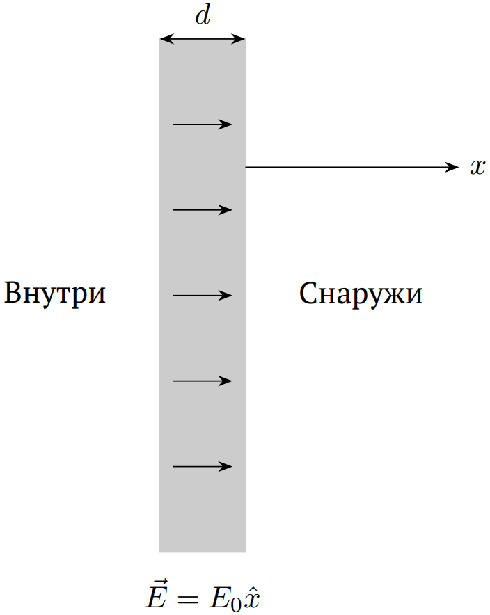
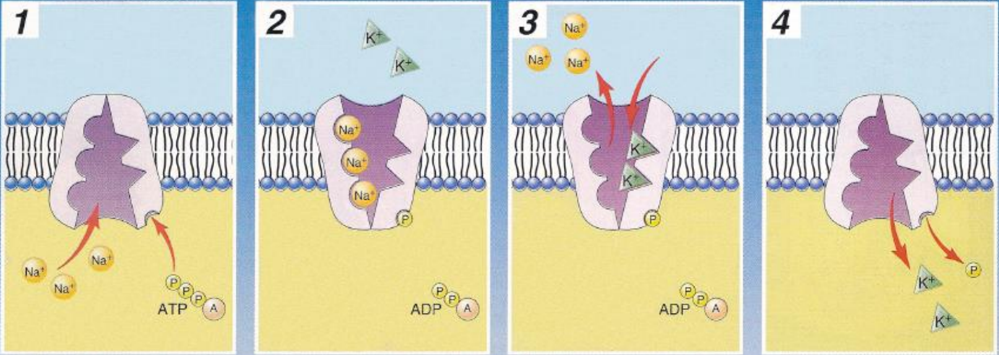
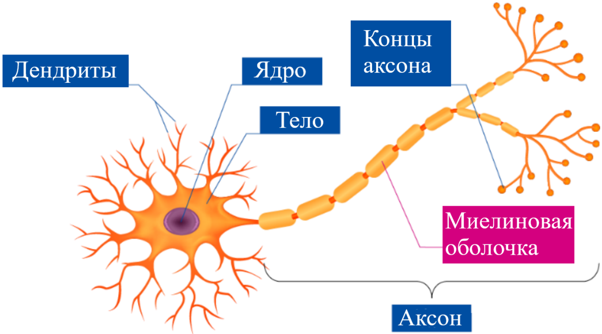
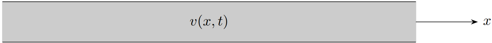
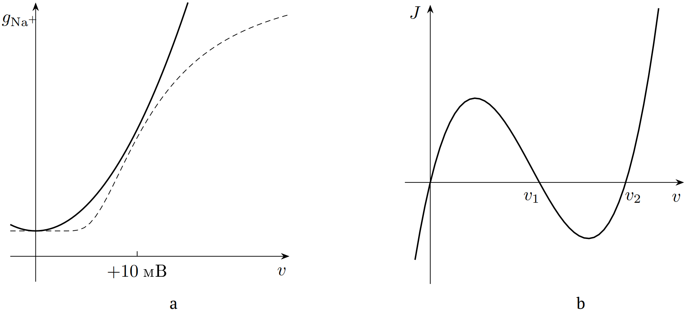

X25 (2025) — English translation
A cell is a living object bounded by a cell membrane, which is a double layer of phospholipids. In the cells of the human body, a voltage exists between the inner and outer surfaces of the membrane, which is called the membrane potential. At steady state, the potential inside the cell is approximately $60-80~мВ$ lower, this is called the resting potential. Membrane potential plays an important role in the process of communication between nerve cells. In this problem, the causes of the membrane potential and the transport of signals in nerve cells are studied. You may need the following values for the physical constants: Electron charge $e=1.602\cdot10^{-19}~Кл$ Boltzmann's constant $k_B=1.381\cdot10^{-23}~Дж/К$ Avogadro's constant $N_A=6.022\cdot10^{23}~моль^{-1}$ Vacuum dielectric constant $\varepsilon_0=8.85\cdot10^{-12}~Ф/м$ The concentration labeled $n$ is measured in $м^{-3}$, and the concentration labeled $c$ is in $ммоль/л$.
You may need the following values for physical constants:
The concentration indicated by $n$ is measured in $м^{-3}$, and the concentration indicated by $c$ is measured in $ммоль/л$.
Some substances, when dissolved in water, tend to dissociate, that is, break up into positive and negative ions (for example, $\mathrm{NaCl}$ breaks down into $\mathrm{Na^+}$ and $\mathrm{Cl^-}$). Such a solution is called ionized. Before considering the membrane potential, let's study the electrostatic properties of an ionized solution. In such a solution, the force of interaction between two charges does not obey Coulomb’s law, since the ions under the influence of charges are redistributed, causing a screening effect. The force of interaction between charges decreases exponentially with distance. Let us consider a small section of the cell membrane as a non-conducting plate of thickness $d$ (Fig. 1). Let us introduce the $x$ axis perpendicular to the membrane so that it starts on the outer surface and is directed away from the cell. The system is in equilibrium at temperature $T$. The electric field inside the membrane is $\vec E=E_0\hat x$.

Without loss of generality, consider the solution outside the cell. The solution contains several types of ions, which are numbered with the index $i$ from $1$ to $I$. Let the concentration of ions of the $i$ type far from the cell be $n_{i0}$, and the charge be $q_{i}$. At a great distance from the cell, the solution is electrically neutral, that is, $\sum\limits_i n_{i0}q_{i}=0$). Let also be the magnitude of the potential difference between the point $x=0$ and the solution far from the cell $| V|\ll k_BT/|q_i|$ ($k_B$ is the Boltzmann constant). The relative dielectric constant of the solution is $\varepsilon$.
Hint: according to the Boltzmann distribution, at thermodynamic equilibrium, the concentration of each type of ions $n_i$ depends on their potential energy of these ions $U_i$ according to the law:\[n_i =n_{i0}\exp\left[-\dfrac{Vq_i}{k_BT}\right].\]
If you did everything correctly, you should have found that the Debye shielding length is much less than the thickness of the cell membrane. This allows us to consider the membrane as a flat capacitor, while considering the solution electrically neutral. The membrane potential $V$ is equal to the voltage across the capacitor.
In fact, the cell membrane does not completely isolate the inside and outside of the cell, but has many ion channels, each of which can only allow certain types of ions to pass through. For example, sodium ions pass freely through sodium channels. This is called passive transport. The membrane potential at which equilibrium is achieved for a particular type of ion $i$ is called the Nernst potential $V_i^\mathrm{Nernst}$.
The membrane potential at which equilibrium is achieved for a particular type of ion $i$ is called the Nernst potential $V_i^\mathrm{Nernst}$.
If for some type of ions the membrane potential is not equal to the Nernst potential, but passive transport channels exist, a flow of these ions will occur through the membrane. The resting membrane potential occurs when not all ions can pass through the membrane (for example, charged protein molecules). Let the protein molecules be uniformly distributed in the cell with a volumetric charge density $\rho_\mathrm{macro}$, and the membrane has channels for the transport of potassium, sodium and chlorine ions. The concentrations of these ions outside the cell are $c_\mathrm{K^+}^0=20~ммоль/л$, $c_\mathrm{Na^+}^0=440~ммоль/л$ and $c_\mathrm{Cl^-}^0=560~ммоль/л$, respectively; $\rho_\mathrm{macro}/N_Ae=-400~ммоль/л$. The solution inside the cell is electrically neutral (that is, the total charge density of protein molecules and ions is zero), the system is in thermodynamic equilibrium at a temperature $T=310~К$.
In addition to passive transport channels, there are also active transport channels in the cell membrane, such as sodium-potassium pumps. An example of the operation of a sodium-potassium pump is shown in Fig. 2. In one cycle, this pump removes three sodium ions from the cell and introduces two potassium ions into the cell.

Sodium-potassium pumps provide a current $J_\mathrm{pump}=0.5~мкА/см^2$ per unit membrane area. The current per unit area through passive transport channels is given by the expression:\[J_i=g_i(V-V_i^\mathrm{Nernst}),\]where “conductivity” $g_{\mathrm K^+}\approx 25 g_{\mathrm{Na}^+}\approx 2g_{\mathrm{Cl}^-}\approx 4~Ом^{-1}\cdot м^{-2}$. The positive direction of the current is outward from the cell.
The assumption of cellular equilibrium does not hold for signaling in neurons. In Fig. Figure 3 shows a diagram of a nerve cell. A nerve cell consists of three parts - dendrites, nucleus and axon. Dendrites are used to receive signals from other cells, and axons are used to transmit signals to neurons or muscles. This part examines the process of signal transmission along dendrites and axons.

For simplicity, we will consider dendrites and axon as a long straight thin homogeneous conductor with radius $a$ and conductivity $\sigma$. Let's direct the $x$ axis along the conductor in the direction of signal propagation (see Fig. 4). We can assume that the current inside the conductor flows uniformly over the cross section. The thickness of the neuron cell membrane is $\ll a$, and its capacity per unit length is $C$. We will denote the difference between the membrane potential at point $x$ at time $t$ and the resting membrane potential as $v(x,t)$ (hereinafter we will call this value the dynamic membrane potential).

The total “conductance” of passive transport channels is equal to $g_\mathrm{tot}$, and the operating speed of active transport channels does not depend on the membrane potential.
Note: it is convenient to look for the solution in the form\[v(x,t)=\dfrac{v_0b}{\sqrt{f(t)}}\exp\left[-\dfrac{x^2}{f(t)}\right]\exp\left[-\dfrac{t}{\tau}\right],\]where $f(t)$ is a function linear in $t$, $\tau$ is some constant.
As you can see, within the simplest model, the neural signal quickly fades and does not spread very far. In reality, more complex processes occur during the propagation of a neural signal. It was discovered experimentally that sodium channel conductance actually depends on membrane potential; this dependence $g_{\mathrm{Na}^+}(v)$ is shown by a dotted line in Fig. 5a. For convenience of calculations, we approximate this dependence in the form:\[g_{\mathrm{Na}^+}(v)=g_{\mathrm{Na}^+}^0+Bv^2,\]where $B > 0$ is a known constant. Since the zero-potential conductance $g_{\mathrm{Na}^+}^0$ is already included in $g_\mathrm{tot}$, only the influence of $Bv^2$ needs to be considered. Let the difference between the Nernst potential of sodium ions $V_{\mathrm{Na^+}}^\mathrm{Nernst}$ and the resting membrane potential $V_0$ be equal to $H > 0$ and practically do not change with time.

Source: https://pho.rs/p/4191